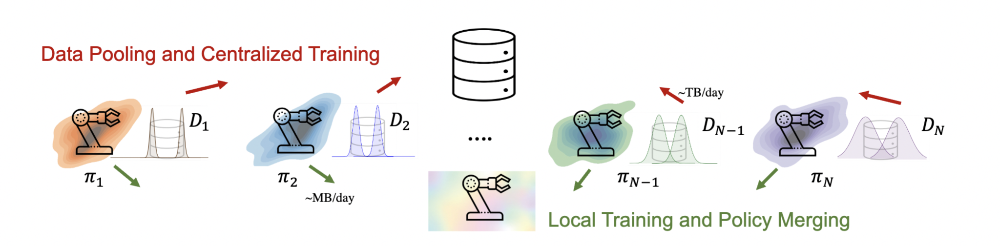
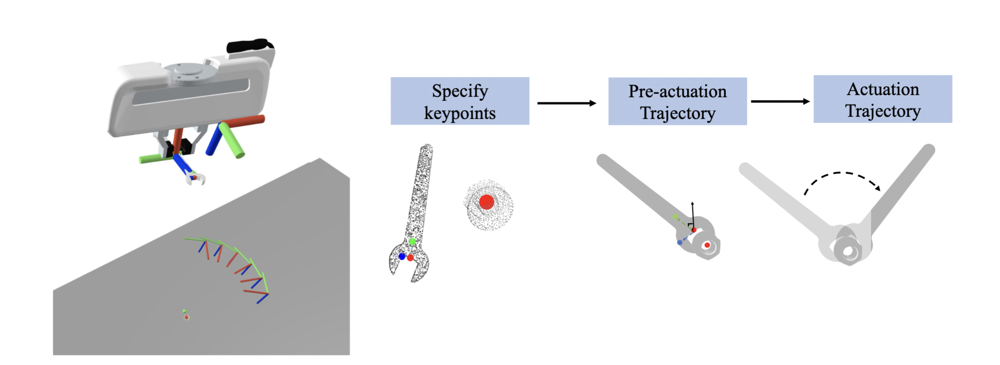

This website template is borrowed from nerfie

Fleets of robots ingest massive amounts of streaming data generated by interacting with their environments, far more than those that can be stored or transmitted with ease. At the same time, we hope that teams of robots can co-acquire diverse skills through their experiences in varied settings. How can we enable such fleet-level learning without having to transmit or centralize fleet-scale data? In this paper, we investigate distributed learning of policies as a potential solution. To efficiently merge policies in the distributed setting, we propose fleet-merge, an instantiation of distributed learning that accounts for the symmetries that can arise in learning policies that are parameterized by recurrent neural networks.
We show that fleet-merge consolidates the behavior of policies trained on 50 tasks in the Meta-World environment, with the merged policy achieving good performance on nearly all training tasks at test time. Moreover, we introduce a novel robotic tool-use benchmark, fleet-tools, for fleet policy learning in compositional and contact-rich robot manipulation tasks, which might be of broader interest, and validate the efficacy of fleet-merge on the benchmark.

This website template is borrowed from nerfie